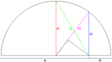

In mathematics, generalized means are a family of functions for aggregating sets of numbers, that include as special cases the Pythagorean means (arithmetic, geometric, and harmonic means). The generalized mean is also known as power mean or Hölder mean (named after Otto Hölder).
Definition[edit]
If p is a non-zero real number, and  are positive real numbers, then the generalized mean or power mean with exponent p of these positive real numbers is:
are positive real numbers, then the generalized mean or power mean with exponent p of these positive real numbers is:
Note the relationship to the p-norm. For p = 0 we set it equal to the geometric mean (which is the limit of means with exponents approaching zero, as proved below):
Furthermore, for a sequence of positive weights wi with sum  we define the weighted power mean as:
we define the weighted power mean as:
The unweighted means correspond to setting all wi = 1/n.
Special cases[edit]
 A visual depiction of some of the specified cases for
n = 2 with
a = x1 = M+∞,
b = x2 = M−∞,
harmonic mean, H = M−1(a, b),
geometric mean, G = M0(a, b)
arithmetic mean, A = M1(a, b), and
quadratic mean, Q = M2(a, b).
|
|
minimum
|
|
|
harmonic mean
|
|
|
geometric mean
|
|
|
arithmetic mean
|

|
quadratic mean
|
|
|
cubic mean
|
|
|
maximum
|
Proof of  (geometric mean) (geometric mean)
|
|
We can rewrite the definition of Mp using the exponential function
In the limit p → 0, we can apply L'Hôpital's rule to the argument of the exponential function. Differentiating the numerator and denominator with respect to p, we have

By the continuity of the exponential function, we can substitute back into the above relation to obtain
as desired.
|
| Proof of and
|
|
Assume (possibly after relabeling and combining terms together) that . Then
The formula for follows from
|
Properties[edit]
- Each generalized mean always lies between the smallest and largest of the x values.
- Each generalized mean is a symmetric function of its arguments;
permuting the arguments of a generalized mean does not change its value.
- Like most means, the generalized mean is a homogeneous function of its arguments x1, ..., xn. That is, if b is a positive real number, then the generalized mean with exponent p of the numbers is equal to b times the generalized mean of the numbers x1, …, xn.
- Like the quasi-arithmetic means, the computation of the mean can be split into computations of equal sized sub-blocks.
Generalized mean inequality[edit]
In general,
- if p < q, then
and the two means are equal if and only if x1 = x2 = ... = xn.
The inequality is true for real values of p and q, as well as positive and negative infinity values.
It follows from the fact that, for all real p,
which can be proved using Jensen's inequality.
In particular, for p in {−1, 0, 1}, the generalized mean inequality implies the Pythagorean means inequality as well as the inequality of arithmetic and geometric means.
Proof of power means inequality[edit]
We will prove weighted power means inequality, for the purpose of the
proof we will assume the following without loss of generality:
Proof for unweighted power means is easily obtained by substituting wi = 1/n.
Equivalence of inequalities between means of opposite signs[edit]
Suppose an average between power means with exponents p and q holds:
applying this, then:
We raise both sides to the power of −1 (strictly decreasing function in positive reals):
We get the inequality for means with exponents −p and −q,
and we can use the same reasoning backwards, thus proving the
inequalities to be equivalent, which will be used in some of the later
proofs.
Geometric mean[edit]
For any q > 0 and non-negative weights summing to 1, the following inequality holds:
The proof follows from Jensen's inequality, making use of the fact the logarithm is concave:
By applying the exponential function to both sides and observing that as a strictly increasing function it preserves the sign of the inequality, we get
Taking qth powers of the xi, we are done for the inequality with positive q; the case for negatives is identical.
Inequality between any two power means[edit]
We are to prove that for any p < q the following inequality holds:
if p is negative, and q is positive, the inequality is equivalent to the one proved above:
The proof for positive p and q is as follows: Define the following function: f : R+ → R+ . f is a power function, so it does have a second derivative:
which is strictly positive within the domain of f, since q > p, so we know f is convex.
Using this, and the Jensen's inequality we get:
after raising both side to the power of 1/q (an increasing function, since 1/q is positive) we get the inequality which was to be proven:
Using the previously shown equivalence we can prove the inequality for negative p and q by substituting them with, respectively, −q and −p, QED.
Generalized f-mean[edit]
The power mean could be generalized further to the generalized f-mean:
This covers the geometric mean without using a limit with f(x) = log(x). The power mean is obtained for f(x) = xp.
Applications[edit]
Signal processing[edit]
A power mean serves a non-linear moving average which is shifted towards small signal values for small p and emphasizes big signal values for big p. Given an efficient implementation of a moving arithmetic mean called smooth one can implement a moving power mean according to the following Haskell code.
powerSmooth :: Floating a => ([a] -> [a]) -> a -> [a] -> [a]
powerSmooth smooth p = map (** recip p) . smooth . map (**p)
See also[edit]
External links[edit]
{kind=link}